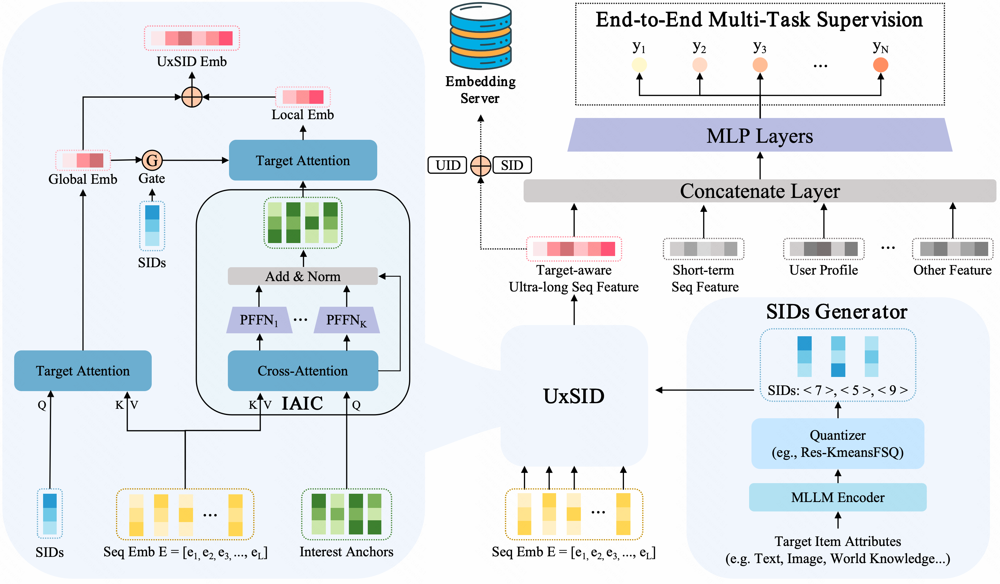
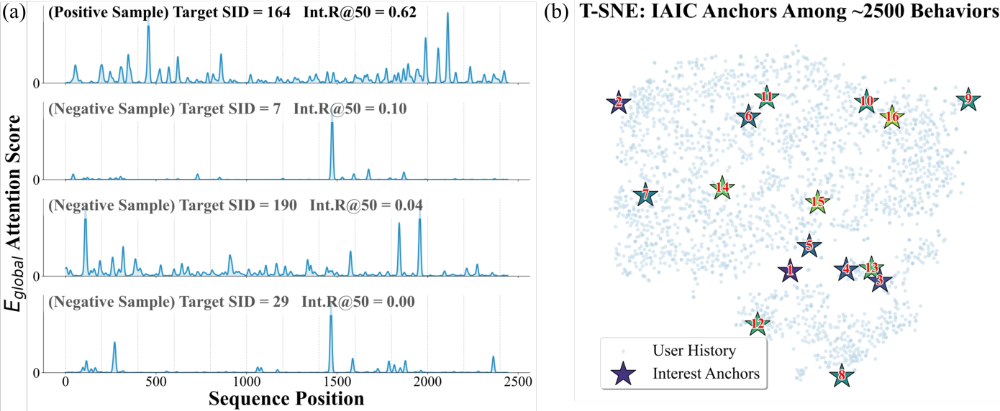
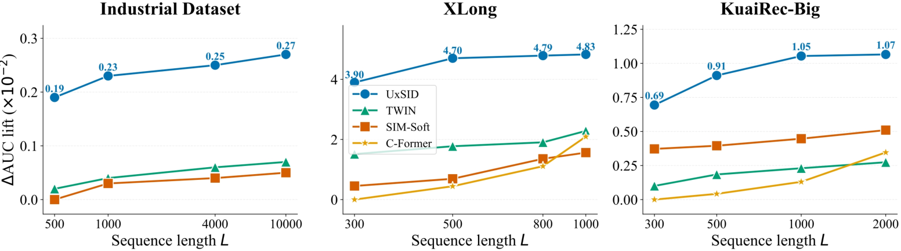

目录 · 11 节
1它到底在解决什么问题？2先看全景3第一步：把长序列压成 16 个兴趣锚点4第二步：用 SID 做两级探测5怎么上线：按“用户 × SID”离线存好6实验：工业数据收益小但稳，公开数据要打折7消融：SID 比类目好，其余模块贡献很小8线上结果9我认为它的局限10一个推荐团队可以怎么试11一句话结论和评价分享 SHARE
做超长行为序列建模的推荐和广告团队值得读。它在两条老路之间找了一个工程上很实际的中间点：既不为每个候选在线检索一遍历史（SIM、TWIN 那一路），也不把整段历史压成一组和候选无关的固定向量（MIMN、C-Former 那一路），而是按候选物品的 Semantic ID 分组，同组候选共用一份离线算好的用户兴趣。核心思想一句话：用候选的第一层 SID 当 query，对用户的完整历史和压缩后的兴趣锚点各做一次 attention，把结果按“用户 × SID”离线存好，线上只做一次查表。快手工业数据上 CTCVR AUC 从 TWIN 的 0.8609 提到 0.8626，一周广告 A/B 收入涨 0.337%，线上延迟只多 0.16 毫秒。我认为“按 SID 分组缓存”这个形态值得借鉴，但公开数据集上的部分结论样本太少，存储和缓存覆盖的细节也交代得不够。
它到底在解决什么问题？
先看一个示意场景。一个活跃用户过去攒了上万条行为（论文提到活跃用户一周就能互动上万个物品），现在要给他排一条运动鞋广告。
| 做法 | 线上要做什么 | 问题（示意） |
|---|---|---|
| 检索式（SIM、TWIN） | 对每个候选在上万条历史里找出最相关的 100 条，再做 attention | 每个候选都要检索一次，线上贵；只按类目或 embedding 相似度挑，搭配购买的袜子、运动手表可能被漏掉 |
| 压缩式（MIMN、C-Former） | 离线把历史压成十几个固定向量，线上直接用 | 不管候选是运动鞋还是口红，用户表示都一样，和候选相关的兴趣被平均掉 |
| UxSID | 按候选的 SID 查一份离线算好的向量 | 同一个 SID 下的候选共用一份表示，粒度介于两者之间 |
论文举的例子是：检索单元偏向“裤子”时，会丢掉和裤子搭配的腰带或鞋。检索式的毛病在于挑选标准太窄、名额有限；压缩式的毛病在于和候选无关。
SID 是用多模态大模型把物品内容编码成向量，再逐层量化得到的离散编码，语义相近的物品会落到同一个码上。UxSID 只用第一层码，工业部署里这一层有 4096 个取值。也就是说，所有候选被分成 4096 组，同组共用一份用户兴趣表示。这正是它能离线算好、线上查表的前提：如果按每个候选物品算，组合数太多存不下；按 SID 分组，只需为每个用户的活跃 SID 各存一份。按我的理解，活跃 SID 就是用户历史行为里出现过的那些 SID；论文说 SID 聚类性好，所以这个数量不大，快手线上平均每人约 100 个。
先看全景

整条流程可以分成四步：
| 步骤 | 输入 | 输出 |
|---|---|---|
| 1. 生成 SID | 物品文本、图像等内容 | 每个物品一串离散码，只用第一层 |
| 2. 压缩兴趣（IAIC） | 用户完整行为序列 | K 个兴趣锚点向量，论文取 16 |
| 3. 两级探测 | 候选的 SID、完整序列、兴趣锚点 | 全局向量 + 局部向量，各 32 维 |
| 4. 离线存储、线上查表 | 用户 ID 和 SID | 排序模型拿到一个 2×32 的向量 |
关键分工是：完整序列负责细粒度的逐条相关性，压缩后的锚点负责去噪和多兴趣结构，SID 决定这次要从两者里取哪一部分。下面拆开讲。
第一步：把长序列压成 16 个兴趣锚点
IAIC（Item-Agnostic Interest Compression，与候选无关的兴趣压缩）准备 K 个可学习的锚点向量，把它们当 query，对整段行为序列做一次 cross-attention，每个锚点从上万条行为里加权汇总出一个兴趣向量。这一步和候选无关，作用类似 C-Former 里的聚类。
为什么还需要一个和候选无关的压缩？因为上万条行为里大部分是噪声，直接拿 SID 去对完整序列做 attention，容易被大量弱相关的行为摊薄。锚点先把历史整理成十几个“兴趣方向”，后面的局部探测在这十几个向量上做选择，噪声小得多。
每个锚点后面接一个只属于它自己的小前馈网络（论文叫 PFFN，每个锚点一套参数），让不同锚点在各自的子空间里变换，而不是共用一套参数被拉到一起。再加一个正交损失：
是 K 个锚点拼成的矩阵， 是单位矩阵。直觉是希望锚点两两正交，各管一个兴趣。手算一个示意：两个锚点都是 (1, 0)，方向完全相同，损失是 1；一个 (1, 0)、一个 (0, 1)，互相垂直，损失是 0（这里按谱范数理解分母）。损失越大，说明锚点越扎堆。
第二步：用 SID 做两级探测
第一级是显式探测：用候选的 SID embedding 当 query，对完整行为序列做 target attention，得到全局向量。这一步保留了逐条行为层面的相关性，比如用户三个月前买过的某双跑鞋。
第二级是门控后的局部探测。全局向量经过一个两层 MLP 和 sigmoid 得到门控向量，逐维乘到 SID embedding 上，得到新的 query，再去锚点上做 target attention，得到局部向量。手算一个示意：SID embedding 是 [0.8, −0.4, 0.6]，门控是 [1.0, 0.1, 0.5]，新 query 是 [0.8, −0.04, 0.3]。第二维几乎被关掉，第三维减半。也就是说，第一级在完整历史里看到了什么，会决定第二级更关注 SID 的哪些维度。
为什么不直接用原始 SID 去查锚点？同一个 SID 对不同用户的含义不一样。同样是“跑鞋”这组，一个用户历史里是长跑装备，另一个是潮流球鞋，门控让第二级查询带上这个用户自己的上下文。消融里去掉门控，工业数据的 CTCVR AUC 从 0.8626 降到 0.8623，影响不大但方向一致。

左图说明 SID 当 query 时，attention 确实集中到了同组的历史上，而且能跨越整段序列，不只看最近的行为。右图说明正交约束起了作用：16 个锚点没有挤在一起，各自落在用户历史的不同区域。这两张图都是单个用户的案例，只能当直观佐证。
最后两级输出拼成 2×32 的向量，和候选特征、用户画像、短期序列等一起送进排序 MLP，损失是二分类交叉熵加上正交损失，整个模型端到端训练。
怎么上线：按“用户 × SID”离线存好
训练好以后，对每个用户、每个相关的 SID 离线算出 UxSID 向量，用“用户 ID 和 SID 拼起来再哈希”作为键，存进 embedding 服务器。线上排序时，拿候选的 SID 和用户 ID 拼出键，做一次点查。
存储量能不能接受？论文给的数字是：快手约 4 亿活跃用户，平均每人约 100 个 SID，总存储约 2.56 TB。我用这些数字核了一下：4 亿 × 100 × 64 个数，正好是 2.56 万亿个数。所以 2.56 TB 对应每个数 1 字节，相当于按 8 位存；如果按 32 位浮点存，会是这个数的 4 倍。这个量对分布式 KV 存储仍然可行，但读者自己估算时要注意精度。
成本对比是这篇最有说服力的部分。离线训练 UxSID 模型时，序列从 1000 加到 10000，GPU 只从 16 张加到 40 张。线上排序模型只看 2×32 的压缩向量，所以线上资源和序列长度无关。作为对照，现在 1000 长度的线上模型约占 450 张 GPU；作者估计，如果在排序模型里直接把序列加到 10000，需要约 5300 张，意味着线上成本要翻十倍以上。把长序列的计算挪到离线，线上只为每个候选多做一次查表，延迟只多 0.16 毫秒。
实验：工业数据收益小但稳，公开数据要打折
公开数据集是 XLong（从一个大型电商平台采样，1000 个用户，每人 1000 条行为）和 KuaiRec-Big（快手，7176 个用户，平均序列长 1746）。所有方法共享底层结构，只换长序列模块；指标是 AUC。
| 方法 | XLong AUC | KuaiRec-Big AUC | 工业 CTCVR AUC |
|---|---|---|---|
| DIN（只看最近 100 条） | 0.7889 | 0.8181 | — |
| SIM-Soft（embedding 检索） | 0.7971 | 0.8279 | 0.8608 |
| TWIN（检索与精排目标一致） | 0.8154 | 0.8269 | 0.8609 |
| C-Former（与候选无关的压缩） | 0.8135 | 0.8276 | — |
| UxSID | 0.8408 | 0.8348 | 0.8626 |
工业数据上，UxSID 比 TWIN 高 0.0017。作者说这个数据集上 AUC 提升 0.1% 就是重要的里程碑。0.0017 换算成相对提升约 0.2%（0.0017 ÷ 0.8609），按百分点算是 0.17 个，无论哪种口径都过了这个门槛，所以这个提升可以算扎实。KuaiRec-Big 上比最强基线高约 0.007，三个随机种子的标准差只有 0.0001，结论可靠。
XLong 上领先 TWIN 0.025，幅度大得多，但要打折看。XLong 只有 1000 个用户，每个用户只拿最后一条行为做测试，测试集非常小。UxSID 三个种子在 XLong 上的标准差是 0.0023，是 KuaiRec-Big 的 20 多倍，说明这个数据集上的 AUC 本身就抖得厉害。
作者还检查了收益是否只是来自 SID 这个额外信息：把第一层 SID 当普通特征加给所有基线，基线都略有提升（TWIN 在 XLong 上从 0.8154 到 0.8189），UxSID 仍然领先。这说明收益主要来自结构，而不只是多了一个特征。
消融：SID 比类目好，其余模块贡献很小
| 变体 | 工业 CTCVR AUC | XLong AUC | KuaiRec-Big AUC |
|---|---|---|---|
| 用类目代替 SID 做 query | 0.8605 | — | 0.8261 |
| 去掉全局向量 | 0.8615 | 0.8370 | 0.8302 |
| 去掉局部向量 | 0.8618 | 0.8375 | 0.8314 |
| 去掉正交损失 | 0.8624 | 0.8385 | 0.8344 |
| 去掉门控 | 0.8623 | 0.8376 | 0.8342 |
| 完整 UxSID | 0.8626 | 0.8408 | 0.8348 |
这张表说明三件事。第一，用 SID 当 query 是最关键的一步：换成粗粒度的类目，工业 AUC 掉 0.0021，比去掉任何一个模块都多。论文还算了一个指标：attention 分数最高的 50 条历史里，和候选同 SID 或同类目的比例。工业数据上，用 SID 查时这个比例是 14.88%，用类目查只有 5.43%，说明 SID 确实把同组的历史找得更准。第二，全局和局部两路都有用，去掉全局掉得更多。第三，正交损失和门控在工业数据上各只贡献 0.0002 到 0.0003。XLong 上各项差距在 0.0023 到 0.0038 之间，只有 1 到 2 个标准差，单看 XLong 判断不了这两个模块是否必要。

序列长度这张图要细看。工业数据上，UxSID 在 500 长度时已经领先基线很多，从 1000 加到 10000 只多了 0.04 个百分点。这说明 UxSID 的收益主要来自结构，序列长度从 1000 加到 10000 带来的额外收益很有限。
线上结果
在快手短视频广告平台做了一周 A/B：广告曝光涨 0.111%，广告主消耗涨 0.231%，收入涨 0.337%。收入涨幅是曝光的三倍，作者的解释是转化更准了，钱花在了更可能转化的展示上。这三个涨幅都在 0.1% 到 0.3% 之间，一周的实验里只能看作方向一致的小幅提升。
我认为它的局限
第一，缓存的覆盖和新鲜度有风险。每个用户平均只存约 100 个 SID，而第一层 SID 有 4096 个，候选的 SID 不在这 100 个里时就查不到 UxSID 向量，上线前要先定好兜底方案。附录还说 embedding 服务器每周定期更新一次，如果指的是 UxSID 向量，那么用户最近一周的长期兴趣变化要到下次更新才进得来；离线实验里没有这种延迟。
第二，XLong 上的大幅领先和消融结论都建立在 1000 个用户各自最后一条行为组成的测试集上，种子标准差 0.0023，和多数消融差距同一个量级。真正可信的是工业数据和 KuaiRec-Big，那里的提升是 0.002 到 0.007 量级。
第三，粒度是固定的。同一个第一层 SID 下的所有候选共用一份表示，SID 切得太粗会退化成类目，切得太细存不下。论文的实验都用第一层 SID，换成第二层或其他粒度效果如何，需要自己验证。
一个推荐团队可以怎么试
- 先确认已有的 SID 第一层能不能把候选分出有意义的组：看每个用户的历史和候选平均落在多少个 SID 上，这决定了存储量。
- 先做离线版本：在排序模型里加一路“用候选 SID 对长序列做 target attention”，和已有的 SIM 或 TWIN 对比 AUC，确认 SID 当 query 比类目当 query 好。
- 有收益再加锚点压缩和门控，用多个种子判断这两项是否真的必要。
- 上线前设计好缓存缺失的兜底和更新频率，A/B 时单独看 SID 未命中的那部分流量。
一句话结论和评价
这篇最值得带走的是：超长序列的用户表示不必按每个候选算，也不必和候选完全无关，按 SID 分组共享就能离线算好、线上查表。
| 维度 | 评价 |
|---|---|
| 问题重要性 | 高。超长序列在线上成本高，是排序模型扩容的主要瓶颈之一 |
| 方法创新性 | 中。各个组件都是已有的 attention 和压缩手法，新意在用 SID 决定分组粒度和缓存键 |
| 实验证据 | 中。工业数据和一周 A/B 扎实；XLong 样本太少，正交损失和门控的必要性证据弱 |
| 工程成本 | 中。需要 SID 体系、离线批量计算和 TB 级 KV 存储，但线上只多一次查表 |
| 是否值得尝试 | 值得，尤其是已有 SID 的团队，先从 SID 当 query 的离线对比开始 |
| 适用场景 | 用户行为很长、线上算力紧张、物品已有 Semantic ID 的广告或内容排序 |
读完这篇，你觉得
夜读鸮记下了，谢谢你的反馈。
点一下即可，无需登录；再点一次撤回。只统计匿名次数，不记录你是谁。
讨论
欢迎补充实验细节、复现经验或不同看法。需 GitHub 登录。
正在加载讨论…